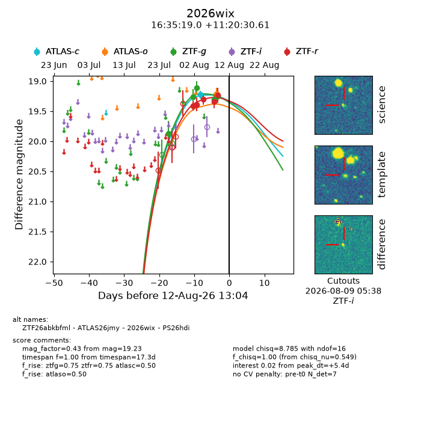
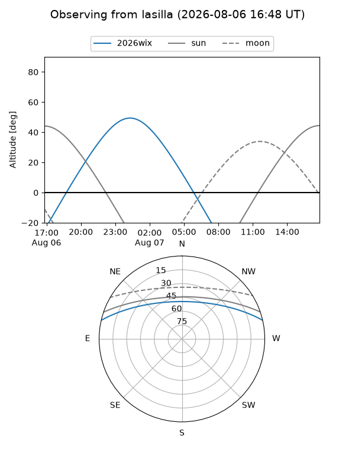
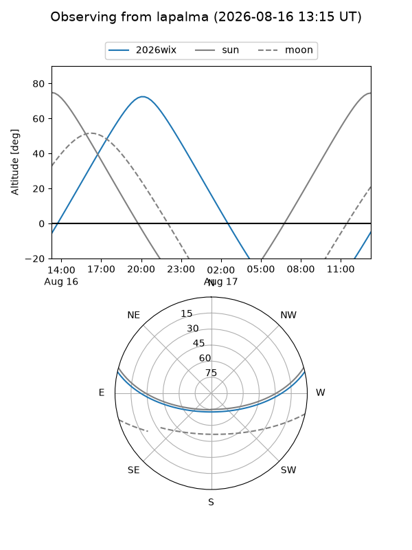
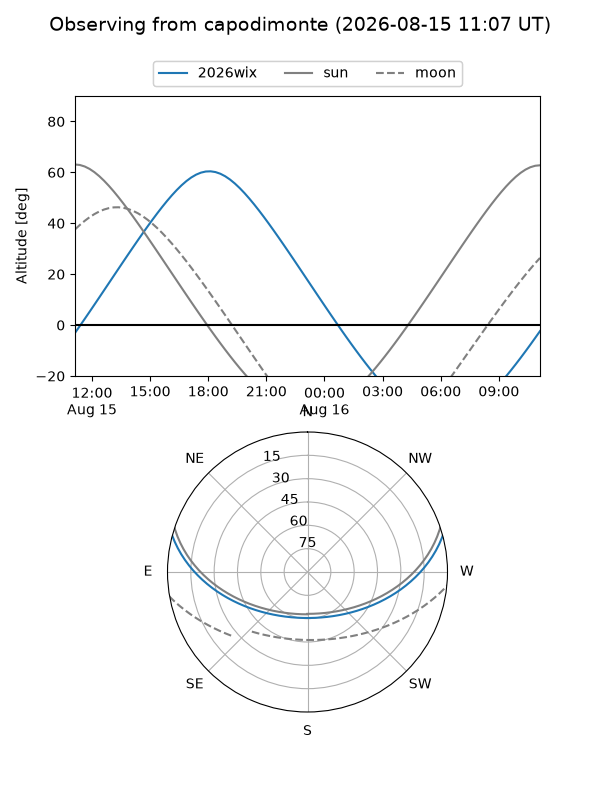
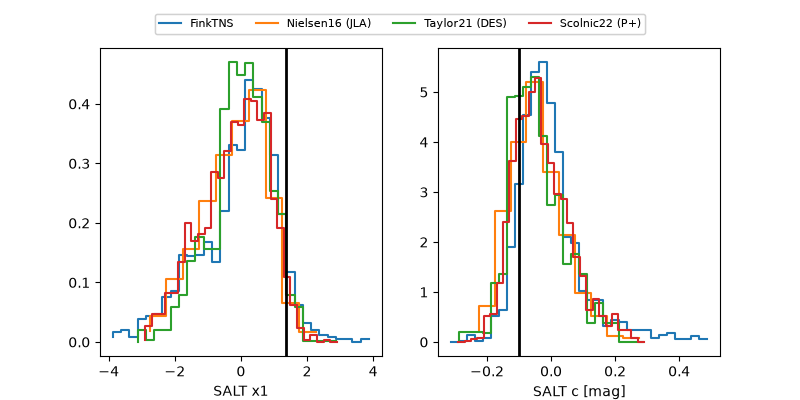

2026wix
Target 2026wix at 2026-08-12 13:07
Aliases and brokers:
FINK-ZTF: ztf.fink-portal.org/ZTF26abkbfml
Lasair-ZTF: lasair-ztf.lsst.ac.uk/objects/ZTF26abkbfml
ALeRCE-ZTF: alerce.online/object/ZTF26abkbfml
YSE-PZ: ziggy.ucolick.org/yse/transient_detail/2026wix
TNS name: wis-tns.org/object/2026wix
Direct TNS query: direct search
alt names
ZTF26abkbfml (ztf,fink_ztf)
2026wix (tns,yse)
ATLAS26jmy (atlas)
PS26hdi (panstarrs)
Coordinates:
equatorial (ra, dec) = 248.8292,+11.34184
equatorial (HMS+DMS) = 16:35:19.00,+11:20:30.61
galactic (l, b) = (27.6463,+35.31093)
Flags:
TNS type: nan
peak dt: +5.4
Photometry:
last atlasc=19.23, atlaso=19.21, ztfg=19.25, ztfr=19.23
1 atlasc, 1 atlaso, 5 ztfg, 5 ztfr detections
Lightcurve

Visibility



Additional plots
